Guida essenziale a KiCad, per realizzare senza sforzo circuiti stampati complessi.
Copyright
Questo documento è coperto dal Copyright © 2010-2015 dei suoi autori come elencati in seguito. È possibile distribuirlo e/o modificarlo nei termini sia della GNU General Public License (http://www.gnu.org/licenses/gpl.html), versione 3 o successive, che della Creative Commons Attribution License (http://creativecommons.org/licenses/by/3.0/), versione 3.0 o successive.
Tutti i marchi registrati all’interno di questa guida appartengono ai loro legittimi proprietari.
Collaboratori
David Jahshan, Phil Hutchinson, Fabrizio Tappero, Christina Jarron, Melroy van den Berg.
Traduzione
Marco Ciampa <ciampix@libero.it>, 2014-2015.
Feedback
Si prega di inviare qualsiasi rapporto bug, suggerimento o nuova versione a:
-
Documentazione di KiCad: https://github.com/KiCad/kicad-doc/issues
-
Software KiCad: https://bugs.launchpad.net/kicad
-
Traduzione di KiCad: https://github.com/KiCad/kicad-i18n/issues
Data di pubblicazione
16 maggio, 2015.
1. Introduzione a KiCad
KiCad è uno strumento open-source per la creazione di schemi elettrici e circuiti stampati. Sotto la sua apparente interfaccia monolitica, KiCad incorpora un elegante insieme di strumenti software indipendenti:
| Nome programma | Descrizione | Estensione file |
|---|---|---|
KiCad |
Gestore progetti |
*.pro |
Eeschema |
Editor di schemi (e di componenti) elettrici |
*.sch, *.lib, *.net |
CvPcb |
Selezionatore di impronte |
+*.net |
PCBnew |
Editor di circuiti stampati |
*.kicad_pcb |
GerbView |
Visualizzatore di file Gerber |
Tutti i classici file gerber |
Bitmap2Component |
Convertitore di immagini bitmap in componenti o impronte |
*.lib, *.kicad_mod, *.kicad_wks |
PCB Calculator |
Calcolatore per componenti, spessore tracce, spaziature elettriche, codici colore, e altro… |
Nessuno |
Pl Editor |
Editor dei fogli mastri o di disposizione |
*.kicad_wks |
|
Nota
|
L’elenco delle estensioni non è completo e contiene solo un sottoinsieme dei file che vengono elaborati da KiCad ma è rappresentativo per una comprensione di base del tipo di file usati da ogni applicazione di KiCad. |
KiCad può essere considerato abbastanza maturo da essere usato con soddisfazione per lo sviluppo e la manutenzione di schede elettroniche complesse.
KiCad non presenta alcun limite di dimensione scheda e può gestire tranquillamente fino a 32 strati rame, fino a 14 strati tecnici e 4 ausiliari. KiCad può creare tutti i file necessari per la fabbricazione di circuiti stampati, ovvero file Gerber per fotoplotter, file di forature, file per il posizionamento automatizzato dei componenti e molto altro.
Essendo open source (con licenza GPL), KiCad rappresenta lo strumento ideale per i progetti orientati alla creazione di hardware elettronico in salsa opensource.
Su Internet, la home di KiCad è:
1.1. Scaricamento e installazione di KiCad
KiCad gira su GNU/Linux, Apple OS X e Windows. È possibile trovare le informazioni e le copie di KiCad più aggiornate da:
|
Importante
|
I rilasci stabili di KiCad avvengono periodicamente secondo la Politica di rilasci stabili di KiCad. Nuove funzioni vengono aggiunte al ramo di sviluppo con continuità. Se si vuole sfruttare queste nuove caratteristiche e contemporaneamente aiutare a testarne lo sviluppo, scaricare l’ultimo pacchetto "nightly build" ovvero sperimentale, per la propria piattaforma. I pacchetti sperimentali possono presentare dei bachi tuttavia è l’obiettivo del team di sviluppo di KiCad mantenere il ramo di sviluppo più funzionale possibile anche durante lo sviluppo di nuove caratteristiche (N.d.T: ergo, se i difetti che dovessero presentarsi vengono segnalati velocemente, altrettanto velocemente dovrebbero essere risolti). |
1.2. Sotto GNU/Linux
Versioni stabili di KiCad si possono trovare tramite i gestori dei pacchetti delle più diffuse distribuzioni cercando i pacchetti kicad e kicad-doc. Se la propria distribuzione non fornisce ancora l’ultima versione stabile, seguire le istruzioni per l’installazione delle versioni instabili, selezionare e quindi installare l’ultima versione stabile.
Le versioni instabili vengono create partendo dal codice sorgente più recente. Possono presentare dei difetti che potrebbero portare anche a rovinare i file di progetto, generare file gerber non corretti, ecc. ma generalmente sono stabili e sono corredati dalle ultime novità funzionali.
In Ubuntu, il modo più semplice per installare una versione instabile compilata quotidianamente di KiCad, è tramite PPA e Aptitude. Battere i seguenti comandi in un terminale:
sudo add-apt-repository ppa:js-reynaud/ppa-kicad
sudo aptitude update && sudo aptitude safe-upgrade
sudo aptitude install kicad kicad-doc-en
In Fedora il modo più semplice di installare una versione instabile e compilata quotidianamente, è tramite copr. Per installare KiCad tramite copr battere i seguenti comandi:
sudo dnf copr enable mangelajo/kicad
sudo dnf install kicad
In alternativa, si può scaricare e installare una versione pre-compilata di KiCad, o direttamente scaricare il codice sorgente, compilarlo e installare KiCad.
1.3. Sotto Apple OS X
Le versioni stabili di KiCad per OS X si possono trovare su: http://downloads.kicad-pcb.org/osx/stable/
Le versioni instabili vengono create partendo dal codice sorgente più recente. Possono presentare dei difetti che potrebbero portare anche a rovinare i file di progetto, generare file gerber non corretti, ecc. ma generalmente sono stabili e sono corredati dalle ultime novità funzionali.
Le versioni instabili compilate giornalmente si possono trovare al seguente indirizzo: http://downloads.kicad-pcb.org/osx/
1.4. Sotto Windows
Le versioni stabili di KiCad si possono trovare su: http://downloads.kicad-pcb.org/windows/stable/
Le versioni instabili vengono create partendo dal codice sorgente più recente. Possono presentare dei difetti che potrebbero portare anche a rovinare i file di progetto, generare file gerber non corretti, ecc. ma generalmente sono stabili e sono corredati dalle ultime novità funzionali.
Per Windows si possono trovare versioni instabili compilate quotidianamente su: http://downloads.kicad-pcb.org/windows/
1.5. Supporto
Se avete idee, commenti o domande o se vi serve solamente un aiuto:
-
Visitare il Forum
-
Iscrivervi al canale IRC #kicad su Freenode
-
Visionare i molti tutorial
2. Il diagramma di flusso di KiCad
A dispetto delle sue similitudini con altri CAD elettronici, KiCad è caratterizzato da un interessante flusso di lavoro nel quale i componenti dello schema elettrico e le impronte di circuito stampato sono effettivamente due entità separate. Ciò è spesso oggetto di discussioni nei forum su Internet.
2.1. Panorama sul diagramma di flusso di KiCad
Il flusso di lavoro di KiCad è composto da due compiti principali: creazione dello schema elettrico e progettazione fisica della scheda elettronica. Per questi due compiti è necessaria la presenza di una libreria di componenti e una di impronte. KiCad è fornito abbondantemente di entrambe le tipologie. Nel caso non fossero sufficienti, KiCad comprende anche gli strumenti necessari per la creazione di nuovi elementi.
Nella figura seguente si può osservare un diagramma di flusso rappresentante le sequenze di lavoro con KiCad. La figura spiega quali passi è necessario seguire e in che ordine. Quando è stato possibile è stata aggiunta un’icona come aiuto ulteriore.
Per ulteriori informazioni circa la creazione di un componente, consultare la sezione di questo documento intitolata Creare simboli elettrici in KiCad. Mentre per ulteriori informazioni su come creare una nuova impronta, consultare la sezione di questo documento intitolata Creare impronte di componenti.
Sul sito seguente:
Si troverà un esempio di uso di uno strumento che permette di creare velocemente componenti di libreria KiCad. Per ulteriori informazioni su quicklib, fare riferimento alla sezione di questo documento intitolata Crea componenti dello schema con quicklib.
2.2. Forward e back annotation
Dopo che uno schema elettrico sia stato completamente disegnato, il passo successivo è il trasferimento di questo in un circuito stampato seguendo il flusso di lavoro di KiCad. Una volta che il processo di stesura è stato completamente, o anche parzialmente completato, potrebbe servire aggiungere componenti o collegamenti, spostare elementi o altre modifiche. Ciò può essere svolto in due modi: tramite la cosidetta back annotation o tramite la forward annotation.
La back annotation è il processo di invio di cambiamenti nel circuito stampato indietro al suo schema elettrico corrispondente. Alcune persone non considerano questa funzionalità particolarmente utile.
La forward annotation è il processo di trasmissione dei cambiamenti nello schema elettrico al progetto di circuito stampato corrispondente. È una caratteristica fondamentale dato che non è desiderabile rifare totalmente il lavoro di progettazione di un circuito stampato ogniqualvolta si debbano effettuare delle modifiche allo schema elettrico. La forward annotation è discussa nella corrispondente sezione Forward Annotation.
3. Disegno di schemi elettrici
In questa sezione impareremo a disegnare uno schema elettrico usando KiCad.
3.1. Usare Eeschema
-
Sotto Windows eseguire kicad.exe. Sotto Linux eseguire invece kicad nel terminale. All’avvio ci si troverà nella finestra principale del gestore dei progetti di KiCad. Da qui si ha accesso ad otto programmi indipendenti: Eeschema, Editor librerie di schemi elettrici, Pcbnew, Editor impronte di circuiti stampati, GerbView, Bitmap2Component, PCB Calculator e Pl Editor. Fare riferimento allo schema del flusso di lavoro per avere un’idea su come si devono usare questi strumenti.
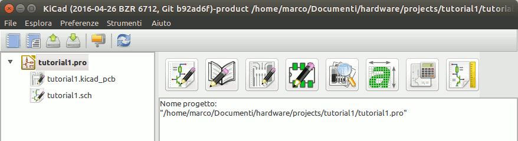 -
Creare un nuovo progetto: File → Nuovo progetto → Nuovo progetto. Intitolare il file del progetto tutorial1. Il file del progetto prenderà automaticamente l’estensione ".pro". A questo punto KiCad chiede se si vuole creare una cartella dedicata, fare clic su "Sì" per conferma. Tutti i file del progetto saranno salvati li dentro.
-
Cominciamo col creare uno schema elettrico. Eseguiamo l’editor degli schemi elettrici Eeschema,
 . È il
primo pulsante da sinistra.
. È il
primo pulsante da sinistra.
-
Fare clic sull’icona Impostazioni pagina
 sulla barra strumenti
in alto. Impostare la dimensione pagina come A4 e inserire il titolo
Tutorial 1. Vedrete che a questo punto sarà possibile inserire più
informazioni se necessario. Fate clic su OK. Queste informazioni popoleranno
il foglio dello schema elettrico nell’angolo in basso a destra. Usare la
rotellina del mouse per ingrandire. Salvare l’intero progetto di schema
elettrico: File → Salva schema progetto.
sulla barra strumenti
in alto. Impostare la dimensione pagina come A4 e inserire il titolo
Tutorial 1. Vedrete che a questo punto sarà possibile inserire più
informazioni se necessario. Fate clic su OK. Queste informazioni popoleranno
il foglio dello schema elettrico nell’angolo in basso a destra. Usare la
rotellina del mouse per ingrandire. Salvare l’intero progetto di schema
elettrico: File → Salva schema progetto.
-
Ora inseriremo il nostro primo componente. Fare clic sull’icona Piazza componente
 sulla
barra destra degli strumenti. La stessa funzionalità la si ottiene premendo
la scorciatoia da tastiera Aggiungi componente (a).
Nota
sulla
barra destra degli strumenti. La stessa funzionalità la si ottiene premendo
la scorciatoia da tastiera Aggiungi componente (a).
NotaSi può consultare l’elenco di tutte le scorciatoie da tastiera disponibili premendo il tasto ?. -
Fare clic nel mezzo del proprio schema elettrico. Apparirà la finestra Scegli componente sullo schermo. Inseriremo una resistenza. Cercare / filtrare R per Resistenza. Si può notare l’intestazione device sopra la resistenza. L’intestazione device è il nome della libreria nella quale il componente è inserito, una libreria generica molto utile.
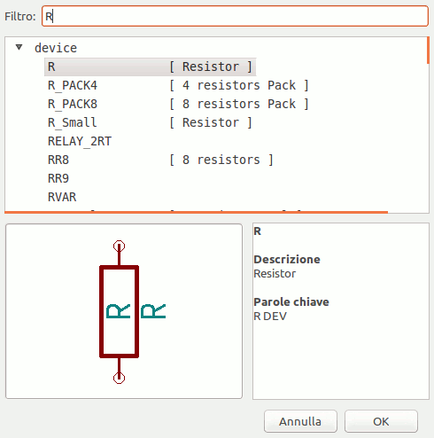 -
Fare doppio clic su di essa. Ciò chiuderà la finestra Scegli componente. Inserire il componente nel foglio dello schema facendo clic dove lo si vuole posizionare.
-
Fare clic sull’icona lente per ingrandire la vista sul componente. In alternativa usare la rotellina del mouse per ingrandire/rimpicciolire la vista. Premere la rotellina (tasto centrale) del mouse per fare pan orizzontalmente e verticalmente.
-
Provare a posizionarsi con il puntatore del mouse sopra il componente R e premere il tasto r. Il componente dovrebbe ruotare. Non è necessario fare clic sul componente per ruotarlo.
NotaSe il proprio mouse era anche sopra il campo riferimento (R) o il campo valore (R?), apparirà un menu. Si osserveranno spesso questi menu Specifica selezione in KiCad; essi permettono di lavorare su oggetti posizionati sopra altri. In questo caso, indicare a KiCad che si desidera eseguire l’azione sul Componente …R…. -
Fare clic destro in mezzo al componente e selezionare Modifica componente → Valore. È possibile ottenere lo stesso risultato posizionandosi sopra il componente e premendo il tasto “v”. In alternativa, il tasto “e” aprirà la finestra di modifica generale. Si noti come la finestra del tasto destro, sotto mostri tutti i possibili tasti scorciatoia per tutte le azioni disponibili.
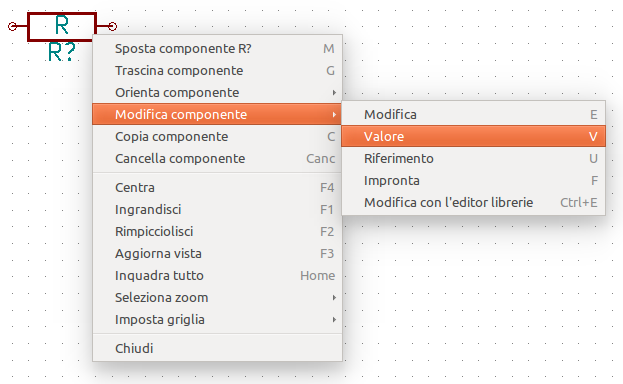 -
La finestra del valore del componente apparirà. Rimpiazzare il valore corrente R con 1k. Fare clic su OK.
NotaNon si cambi il campo del riferimento (R?), questo verrà fatto automaticamente più avanti. Il valore dentro la resistenza dovrebbe essere ora 1k. 
-
Per inserire un’altra resistenza, fare semplicemente clic dove si vuole che questa appaia. La finestra di selezione del componente apparirà nuovamente.
-
La resistenza scelta in precedenza è ora presente nella lista della cronologia, elencata come R. Fare clic su OK e inserire il componente.
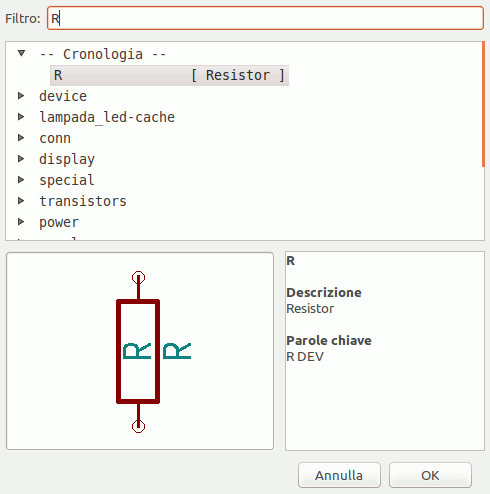 -
Nel caso si commetta un errore e si voglia cancellare un componente, clic destro sul componente e clic su Cancella componente, rimuoverà il componente dallo schema elettrico. In alternativa, si può spostare il puntatore del mouse sopra il componente che si desidera eliminare e premere il tasto Canc.
NotaÈ possibile cambiare qualsiasi scorciatoia da tastiera predefinita andando nelle Preferenze → Tasti scorciatoia → Modifica tasti scorciatoia. Qualsiasi modifica verrà salvata immediatamente. -
È possibile anche duplicare un componente già presente nello schema passandoci sopra con il puntatore del mouse e premendo il tasto c. Fare clic dove si vuole per piazzare il componente duplicato.
-
Clic destro sulla seconda resistenza. Selezionare Trascina componente. Riposizionare il componente e fare clic sinistro per rilasciare. La stessa funzionalità può essere ottenuta posizionando il puntatore del mouse sopra il componente e premendo il tasto g. Usare il tasto r per per ruotare il componente. Il tasto x e y invertono il componente.
NotaClic-destro → Sposta il componente (equivalente al tasto m ) è anch’esso una valida possibilità per spostare oggetti, ma è meglio usarla solo per etichette di componenti e componenti non ancora connessi. Vedremo più avanti il perché. -
Modificare la seconda resistenza passandoci sopra con il puntatore del mouse e premendo il tasto v. Rimpiazzare R con 100. Si può annullare qualsiasi operazione di modifica con la combinazione di tasti ctrl+z.
-
Cambiare la dimensione della griglia. Avrete probabilmente notato che sullo schema elettrico tutti i componenti si dispongono secondo una griglia a maglie larghe. Si può facilmente modificare la dimensione della griglia facendo clic-destro → Seleziona griglia. In generale, è raccomandabile usare una griglia di 50,0 mils per il foglio dello schema elettrico.
-
Stiamo per aggiungere un componente da una libreria che non è configurata nel progetto predefinito. Nel menu, scegliere Preferenze → Librerie componenti e fare clic sul pulsante Aggiungi di File librerie componenti.
-
È necessario trovare dove sono installate le librerie ufficiali di KiCad nel proprio computer. Cercare una cartella library contenente un centinaio di file .dcm e .lib. Provare in C:\Program Files (x86)\KiCad\share\ (Windows) e /usr/share/kicad/library/ (Linux). Una volta trovata la cartella, scegliere e aggiungere la libreria microchip_pic12mcu e chiudere la finestra.
-
Ripetere i passi di aggiunta di componenti, questa volta scegliendo la libreria microchip_pic12mcu invece della device e prelevare il componente PIC12C508A-I/SN da essa.
-
Portare il puntatore del mouse sopra il componente microcontrollore. Premere il tasto y. Si noti come il componente viene ribaltato sul suo asse x o y. Premere nuovamente il tasto per riportarlo al suo orientamento originale.
-
Ripetere i passi di aggiunta di componenti, questa volta scegliendo la libreria device e prelevando il componente LED da essa.
-
Ordinare tutti componenti sullo schema come mostrato in basso.

-
Ora è necessario creare il componente dello schema MYCONN3 per il nostro connettore a 3 piedini. Si può saltare alla sezione intitolata creare componenti dello schema in KiCad per apprendere come creare questo componente da zero e poi ritornare a questa sezione per continuare con la scheda.
-
Ora è possibile inserire il nuovo componente appena creato. Premere il tasto “a” e prelevare il componente MYCONN3 nella libreria mylib.
-
L’identificatore del componente J? apparirà sotto l’etichetta MYCONN3. Se si vuole cambiare la sua posizione, fare clic destro su J? e poi clic su Sposta campo (equivalente al tasto m). Può essere utile ingrandire la vista prima o mentre si fa quest’operazione. Riposizionare J? sotto il componente come mostrato sotto. Le etichette possono essere spostate intorno a volontà.

-
È giunto il momento di inserire i simboli di alimentazione e di massa. Fare clic sul pulsante Piazza porta di alimentazione sulla barra dei comandi a destra. In alternativa, premere il tasto p. Nella finestra di selezione del componente, scorrere in basso e selezionare VCC dalla libreria power. Fare clic su OK.
-
Fare clic sopra il pin della resistenza da 1k per inserire l’elemento VCC. Fare clic sull’area sopra il VDD del microcontrollore. Nella sezione Cronologia selezione componenti selezionare VCC e inserirlo accanto al pin VDD. Ripetere il processo di aggiunta e inserire l’elemento VCC sopra il pin VCC di MYCONN3.
-
Ripetere i passi di aggiunta pin ma questa volta selezionare l’elemento GND. Inserire un elemento GND sotto il pin GND di MYCONN3. Inserire un altro simbolo GND a destra del pin VSS del microcontrollore. Ora lo schema dovrebbe somigliare a questo:

-
Nel prossimo passo collegheremo tutti i fili ai nostri componenti. Fare clic sull’immagine con nome Piazza filo
 sulla barra strumenti a destra.
Nota
sulla barra strumenti a destra.
NotaAttenti a non inserire Piazza bus, che è posizionato appena sotto ed ha il simbolo di un filo più spesso. La sezione connessioni bus in KiCad descrive come usare la selezione bus. -
Fare clic sul cerchietto alla fine del pin 7 del microcontrollore e poi fare clic sul cerchietto sul pin 2 del LED. È possibile ingrandire anche mentre si instaurano le connessioni.
NotaSe si vuole riposizionare componenti connessi, è importante usare il tasto g (da grab, in inglese afferra) e non il tasto m (per move = sposta). Usando il comando g si manterranno le connessioni. Rivedere il passo 24 in caso ci si fosse dimenticato come spostare un componente. 
-
Ripetere questo processo e collegare tutti gli altri componenti come mostrato sotto. Per terminare un collegamento basta fare doppio clic. Quando si collegano i simboli VCC e GND, il filo dovrebbe toccare il fondo del simbolo VCC e la parte medio alta del simbolo GND. Osservare l’immagine sottostante.

-
Ora considereremo un modo alternativo di creare delle connessioni usando le etichette. Prelevare lo strumento di etichettatura collegamenti facendo clic sull’icona Piazza nome collegamento
 sulla barra strumenti a
destra. È possibile usare anche il tasto l.
sulla barra strumenti a
destra. È possibile usare anche il tasto l.
-
Fare clic in mezzo al collegamento connesso al pin 6 del microcontrollore. Chiamare questa etichetta INPUT.
-
Seguire la stessa procedura e inserire un’altra etichetta destra della resistenza da 100 ohm. Chiamare anch’essa INPUT. Le due etichette, avendo lo stesso nome. creano una connessione invisibile tra il pin 6 del PIC e la resistenza da 100 ohm. Questa è una tecnica utile quando si collegano tra loro fili in progetti complessi dove il disegno di tutte le connessioni li renderebbe caotici. Per piazzare un’etichetta non è necessario avere un filo, si può anche collegare direttamente ad un pin.
-
Le etichette possono essere usate anche per etichettare i collegamenti a scopo informativo. Collegare un’etichetta sul pin 7 del PIC. Inserire il nome uCtoLED. Etichettare il collegamento tra la resistenza e il LED, LEDtoR. Etichettare il collegamento tra MYCONN3 e la reistenza come INPUTtoR.
-
Non serve etichettare le linee VCC e GND dato che le etichette ricavate implicitamente dall’oggetto alimentazione a cui sono connesse.
-
Sotto si può osservare come dovrebbe apparire il risultato finale.

-
Occupiamoci ora dei fili sconnessi. Ogni pin o o filo non connesso genererà un avvertimento quando verrà controllato da KiCad. Per evitare questi avvertimenti si può dare istruzioni al programma che i fili non connessi lo sono deliberatamente o impostare manualmente una segnalazione per ogni filo o pin come non connessi.
-
Fare clic sull’icona Piazza indicatore di non connesso
 sulla barra strumenti a
destra. Fare click sui pin 2, 3, 4 e 5. Una X apparirà per indicare che la
mancanza di connessione è intenzionale.
sulla barra strumenti a
destra. Fare click sui pin 2, 3, 4 e 5. Una X apparirà per indicare che la
mancanza di connessione è intenzionale.

-
Alcuni componenti hanno pin di alimentazione invisibili. Li si può rendere visibili facendo clic sull’icona Mostra pin nascosti
 sulla barra strumenti di
sinistra. I pin di alimentazione nascosti vengono connessi automaticamente
se sono rispettate le convenzioni dei nomi di VCC e GND. In generale, non è
consigliato rendere invisibili i pin di alimentazione.
sulla barra strumenti di
sinistra. I pin di alimentazione nascosti vengono connessi automaticamente
se sono rispettate le convenzioni dei nomi di VCC e GND. In generale, non è
consigliato rendere invisibili i pin di alimentazione.
-
Ora è necessario aggiungere un Indicatore di alimentazione per segnalare a KiCad che l’alimentazione arriva da qualche parte. Premere il tasto a, selezionare Elenca tutto, doppio clic sulla libreria power e ricerca di PWR_FLAG. Piazzarne due. Connetterli al pin GND e a VCC come mostrato sotto.
 Nota
NotaCiò eviterà il classico avvertimento di controllo dello schema: Attenzione: il pin power_in non è pilotato (Net xx) -
Spesso è buona pratica scrivere commenti qui e là. Per aggiungere commenti sullo schema elettrico usare l’icona Piazza (aggiungi) testo
 sulla barra strumenti di
destra.
sulla barra strumenti di
destra.
-
Tutti i componenti ora necessitano di avere degli identificatori univoci. In effetti, molti componenti del nostro esempio si chiamano ancora R? o J?. L’assegnazione degli identificatori può essere effettuata automaticamente facendo clic sull’icona del pulsante Annota schema
 sulla barra in cima.
sulla barra in cima.
-
Nella finestra dell’annotazione, selezionare Usa lo schema intero e fare clic sul pulsante Annota. Fare clic su OK nel messaggio di conferma e poi su Chiudi. Si noti che tutti i ? sono stati rimpiazzati da numeri. Ogni identificatore è ora univoco. Nel nostro esempio, sono stati rinominati R1, R2, U1 e J1.
-
Ora controlleremo in nostro schema in cerca di errori. Fare clic sull’icona Esegui controllo regole elettriche
 sulla barra strumenti in cima. Fare clic sul pulsante Esegui. Verrà
generato un rapporto di informazione su errori o avvisi come per esempio per
fili sconnessi. Dovremmo ottenere 0 errori e 0 avvisi. In caso di errori o
avvisi, apparirà sullo schema una piccola freccia verde nella posizione dove
è stato rilevato l’errore o l’avviso. Spuntare Crea file di rapporto ERC e
premere nuovamente il pulsante Esegui per ricevere ulteriori informazioni
sui problemi rilevati.
Nota
sulla barra strumenti in cima. Fare clic sul pulsante Esegui. Verrà
generato un rapporto di informazione su errori o avvisi come per esempio per
fili sconnessi. Dovremmo ottenere 0 errori e 0 avvisi. In caso di errori o
avvisi, apparirà sullo schema una piccola freccia verde nella posizione dove
è stato rilevato l’errore o l’avviso. Spuntare Crea file di rapporto ERC e
premere nuovamente il pulsante Esegui per ricevere ulteriori informazioni
sui problemi rilevati.
NotaSe compare un avvertimento che riporta la scritta "Nessun editor predefinito trovato, sceglierne uno", provare a impostare il percorso ad un editor di testo presente nel sistema come per esempio c:\windows\notepad.exe (windows) o /usr/bin/gedit (Linux). -
Lo schema ora è finito. Possiamo ora creare un file netlist al quale aggiungeremo un’impronta ad ogni componente. Fare clic sull’icona Generazione netlist
 sulla
barra strumenti in alto. Fare clic su Genera e poi salvare con il nome
file predefinito.
sulla
barra strumenti in alto. Fare clic su Genera e poi salvare con il nome
file predefinito.
-
Dopo la generazione del file di netlist, fare clic sull’icona Esegui Cvpcb
 sulla barra strumenti in alto. Se
esce una finestra di dialogo di errore per un file mancante, ignorarla e
premere OK.
sulla barra strumenti in alto. Se
esce una finestra di dialogo di errore per un file mancante, ignorarla e
premere OK.
-
Cvpcb permette di collegare tutti i componenti nello schema con impronte presenti nelle librerie di KiCad. Il pannello in centro mostra tutti i componenti usati nel nostro schema. Qui selezionare D1. Nel pannello a destra ci sono tutte le impronte disponibili, scorrere fino a LEDs: LED-5MM e fare doppio clic su di esso.
-
È possibile che il pannello a destra mostri solo un sottogruppo selezionato delle impronte disponibili. Ciò è perché KiCad sta cercando di suggerirci un sottoinsieme di impronte adatte allo scopo. Fare clic
 ,
,
 e
e
 per
abilitare o disabilitare questi filtri.
per
abilitare o disabilitare questi filtri.
-
Per IC1 selezionare l’impronta Housings_DIP:DIP-8_W7.62mm. Per J1 selezionare l’impronta Connect:Banana_Jack_3Pin. Per R1 e R2 selezionare l’impronta Discret:R1.
-
Se si vuole vedere come appaiono le impronte che si sta scegliendo, ci sono due possibilità. Si può fare clic sull’icona Mostra impronta selezionata
 per un’anteprima
dell’impronta corrente. Oppure, fare clic sull’icona Mostra documentazione
elenco impronte
per un’anteprima
dell’impronta corrente. Oppure, fare clic sull’icona Mostra documentazione
elenco impronte
 e si
otterrà un documento PDF multipagina con tutte le impronte disponibili. Si
può stamparlo e controllare i propri componenti per assicurarsi che le
dimensioni corrispondano.
e si
otterrà un documento PDF multipagina con tutte le impronte disponibili. Si
può stamparlo e controllare i propri componenti per assicurarsi che le
dimensioni corrispondano.
-
Ecco fatto. Ora è possibile aggiornare il file della netlist con tutte le impronte associate. Fare click su File → Salva con nome. Il nome predefinito tutorial1.net va bene, fare clic su salva. Altrimenti si può usare l’icona
 . Il file netlist è
ora stato aggiornato con tutte le impronte. Si noti che se mancano delle
impronte di qualche dispositivo, sarà necessario farsele da
sè. Quest’operazione sarà spiegata in una sezione successiva di questo
documento.
. Il file netlist è
ora stato aggiornato con tutte le impronte. Si noti che se mancano delle
impronte di qualche dispositivo, sarà necessario farsele da
sè. Quest’operazione sarà spiegata in una sezione successiva di questo
documento.
-
Si può chiudere Cvpcb e tornare all’editor di schemi elettrici Eeschema. Salvare il progetto facendo clic su File → Salva schema progetto. Chiudere l’editor dello schema elettrico.
-
Passare al gestore del progetto KiCad.
-
Il file netlist descrive tutti i componenti e le loro connessioni relative ai loro piedini. Il file netlist è in effetti solo un file di testo che è facilmente ispezionabile, modificabile anche con uno script.
NotaI file delle librerie (*.lib) sono anch’essi file di testo e sono facilmente modificabili a mano o con script. -
Per creare una distinta materiali (BOM), andare nell’editor degli schemi elettrici Eeschema e fare clic sull’icona Genera distinta materiali
 sulla barra strumenti in alto. Come
impostazione predefinita non ci sono plug-in attivi. Questi si possono
aggiungere, facendo clic sul pulsante Aggiungi plugin. Selezionare il
file *.xsl che si vuole usare, in questo caso selezioneremo,
bom2csv.xsl.
Nota
sulla barra strumenti in alto. Come
impostazione predefinita non ci sono plug-in attivi. Questi si possono
aggiungere, facendo clic sul pulsante Aggiungi plugin. Selezionare il
file *.xsl che si vuole usare, in questo caso selezioneremo,
bom2csv.xsl.
NotaIl file *.xsl è posizionato nella cartella plugins dell’installazione di KiCad, è posizionata in: /usr/lib/kicad/plugins/.
O ottenere il file attraverso:
wget https://raw.githubusercontent.com/KiCad/kicad-source-mirror/master/eeschema/plugins/bom2csv.xsl
KiCad genera automaticamente il comando, per esempio:xsltproc -o "%O" "/home/<user>/kicad/eeschema/plugins/bom2csv.xsl" "%I"
Si potrebbe voler aggiungere l’estensione, in modo da cambiare questa linea di comando in:xsltproc -o "%O.csv" "/home/<user>/kicad/eeschema/plugins/bom2csv.xsl" "%I"
Premere il tasto di Aiuto per ulteriori informazioni.
-
Ora premere Genera. Il file (con lo stesso nome del progetto) è posizionato nella cartella del progetto. Aprire il file *.csv con LibreOffice Calc o Excel. Apparirà una finestra di importazione, premere OK.
Ora siamo pronti per spostarci nella parte di progettazione del circuito stampato, presentata nella prossima sezione. Comunque, prima di spostarci, diamo una rapida occhiata a come avviene la connessione tra pin di componenti usando le linee bus.
3.2. Connessioni Bus in KiCad
Talvolta è necessario connettere diversi pin sequenziali di un componente A con altri pin sequenziali di un componente B. I questo caso ci sono due opzioni: il metodo a etichette che abbiamo già osservato o l’uso di una connessione bus. Vediamo come si fa.
-
Supponiamo di avere tre connettori a 4 pin che si vuole collegare pin a pin. Usare l’opzione etichetta (premendo il tasto l) per etichettare pin 4 della parte P4. Dare nome a quest’etichetta a1. Ora premere il tasto Ins per ottenere lo stesso elemento automaticamente aggiunto sul pin sotto il pin 4 (pin 3). Si noti come l’etichetta viene automaticamente rinominata a2.
-
Premere il tasto Ins più volte. Il tasto Ins corrisponte all’azione Ripeti l’ultimo elemento ed è un comando molto utile che può semplificarvi non poco la vita.
-
Ripetere la stessa azione di etichettatura sugli altri due connettori CONN_2 e CONN_3 e abbiamo finito. Se si prosegue e si crea un circuito stampato si noterà che questi tre connettori sono collegati assieme. Figura 2 mostra il risultato di quanto descritto. Per questioni estetiche è anche possibile aggiungere una serie di Piazza elemento da filo a bus usando l’icona
 e linee
bus usando l’icona
, come mostrato in figura 3. Si faccia presente, comunque, che non ci
saranno effetti sul circuito stampato.
e linee
bus usando l’icona
, come mostrato in figura 3. Si faccia presente, comunque, che non ci
saranno effetti sul circuito stampato.
-
Si potrebbe anche dire che i fili corti collegati ai pin in figura 2 non sono strettamente necessari. In effetti, le etichette si potrebbero applicare direttamente ai pin.
-
Estendiamo un poco il discorso e supponiamo di avere un quarto connettore di nome CONN_4 che, per qualche ragione, deve avere delle etichette un po' differenti (b1, b2, b3, b4). Ora noi vogliamo collegare Bus a con Bus b nuovamente pin a pin. Vogliamo farlo senza usare l’etichettatura dei pin (che è comunque possibile) e invece usare l’etichettatura sulla linea bus, con un’etichetta per bus.
-
Colleghiamo ed etichettiamo CONN_4 usando il metodo di etichettatura spiegato in precedenza. Diamo nome ai pin b1, b2, b3 e b4. Colleghiamo i pin a una serie di Elementi da filo a bus usando l’icona
e ad una linea bus
usando l’icona
 . Vedere figura
4.
. Vedere figura
4.
-
Inserire un’etichetta (premere il tasto l) sul bus di CONN_4 e darle nome b[1..4].
-
Inserire un’etichetta (premere il tasto l) sul bus precedente e darle nome a[1..4].
-
Quello che possiamo fare ora è di collegare il bus a[1..4] con il bus b[1..4] usando una linea bus tramite il pulsante
.
-
Collegando i due bus assieme, pin a1 verrà automaticamente collegato a pin b1, a2 verrò collegato a b2 e così via. Figura 4 mostra come appare il risultato finale.
NotaIl comando Ripeti l’ultimo elemento accessibile tramite il tasto Ins può essere usato con successo per ripetere inserimenti multipli. For esempio, i fili corti connessi a tutti i pin in figura 2, figura 3 e Figure 4 sono stati piazzati con questo comando. -
Il comando Ripeti l’ultimo elemento accessibile tramite il tasto Ins può essere usato per piazzare molte serie di elementi filo a bus usando l’icona
.

4. Progettazione circuiti stampati
Ora è giunto il momento di usare il file netlist che abbiamo generato per stendere il progetto del circuito stampato. Ciò lo si ottiene tramite lo strumento Pcbnew.
4.1. Usare Pcbnew
-
Dal gestore dei progetti KiCad, fare clic sull’icona Pcbnew . Si aprirà la finestra Pcbnew. Se si riceve un messaggio di errore che dice che il file *.kicad_pcb non esiste e chiede se lo si vuole creare, fare clic su Si.
-
Cominciare inserendo alcune informazioni dello schema. Fare clic sull’icona Impostazioni pagina
sulla
barra strumenti in alto. Impostare la dimensione pagina a A4 e il
titolo a Tutorial1.
-
È una buona idea cominciare con l’impostare l’isolamento e la larghezza minima pista alle specifiche richieste dal proprio fabbricante di circuiti stampati. In generale è possibile impostare l’isolamento a 0.25 e la larghezza minima pista a 0.25. Fare clic sul menu Regole di progettazione → Regole di progettazione. Se non lo mostra già, fare clic sulla scheda Editor della netclass. Cambiare il campo Isolamento in cima alla finestra a 0.25 e il campo Larghezza pista a 0.25 come mostrato sotto. Le misure qua sono in mm.
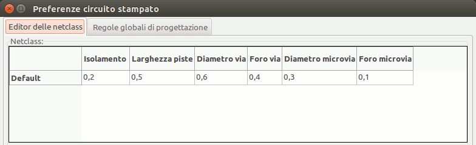 -
Fare clic sulla scheda Regole di progettazione globali e impostare Larghezza pista minima a 0.25'. Fare clic sul pulsante OK per confermare i propri cambiamenti e chiudere la finestra dell’editor delle regole di progettazione.
-
Ora importeremo il file della netlist. Fare clic sull’icona Apri la netlist
sulla barra strumenti
in alto. Fare clic sul pulsante Esplora, selezionare tutorial1.net nel
riquadro di selezione file, e fare clic su Leggi netlist corrente. Poi
premere il tasto Chiudi.
-
Tutti i componenti dovrebbero ora essere visibili nell’angolo in alto a sinistra appena sopra la pagina. Scorrere se non si vedono.
-
Selezionare tutti i componenti con il mouse e spostarli nel centro della scheda. Se necessario è possibile ingrandire o rimpicciolire la vista mentre si spostano i componenti.
-
Tutti i componenti sono collegati tramite un gruppo di fili sottili chiamati ratsnest. Assicurarsi che il pulsante Nascondi ratsnest scheda
 sia
premuto. In questo modo si può osservare la ratsnest (N.d.T: una specie di
ragnatela) di collegamenti tra tutti i componenti.
Nota
sia
premuto. In questo modo si può osservare la ratsnest (N.d.T: una specie di
ragnatela) di collegamenti tra tutti i componenti.
NotaIl suggerimento funziona al contrario: la scritta mostra cosa si ottiene premendo il pulsante. -
Si può spostare ogni componente passandoci sopra con il puntatore del mouse e premendo il tasto g. Fare clic dove si vuole per piazzare il componente. Spostare tutti i componenti attorno in modo da minimizzare gli incroci dei fili.
NotaSe, invece di catturare i componenti (con il tasto g) quando li si sposta attorno, li si muove usando il tasto m noterete in seguito che si perdono le connessioni (succede lo stesso nell’editor degli schemi elettrici). Ergo, usare sempre il tasto g. 
-
Se la ratsnest sparisce o lo schermo diventa disordinato, clic destro e clic su Aggiorna vista. Si noti come un pin della resistenza da 100 ohm è connesso al pin 6 del componente PIC. Questo è il risultato del metodo di etichettatura usato per collegare i pin. Le etichette sono spesso preferite ai fili perché rendono lo schema elettrico meno disordinato.
-
Ora si definirà il bordo del circuito stampato. Selezionare Edge.Cuts dal menu a tendina nella barra strumenti in alto. Fare clic sull’icona Aggiungi linea o poligono grafici
 sulla arra degli
strumenti a destra. Tracciare tutt’attorno il bordo della scheda, fare clic
su ogni angolo, e ricordarsi di lasciare un piccolo spazio tra il bordo del
verde e il bordo del circuito stampato.
sulla arra degli
strumenti a destra. Tracciare tutt’attorno il bordo della scheda, fare clic
su ogni angolo, e ricordarsi di lasciare un piccolo spazio tra il bordo del
verde e il bordo del circuito stampato.
-
Prossimo passo, collegare tutti i fili eccetto GND. In effetti, si collegheranno tutte le connessioni GND in un colpo usando un piano di massa piazzato sullo strato rame inferiore (chiamato B.Cu) sulla scheda.
-
Ora è necessario scegliere su che strato rame si vuole lavorare. Selezionare F.Cu (PgUp) nel menu a tendina della barra strumenti in alto. Questo è lo strato rame superiore.
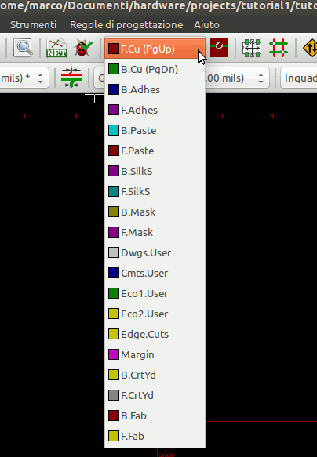 -
Se si decide invece, per esempio, di creare un circuito stampato a 4 strati, andare su Regole di progettazione → Impostazione strati e cambiare Strati rame a 4. Nella tabella Strati si possono etichettare gli strati e decidere per cosa verranno usati. Si noti che ci sono delle preimpostazioni molto utili che possono essere selezionate attraverso il menu Raggruppamento predefinito strati.
-
Clic sull’icona Aggiungi piste e via
 sulla barra
strumenti a destra. Clic sul pin 1 di J1 e stendere una pista fino alla
piazzola R2. Doppio-clic per impostare il punto dove finirà la pista. La
larghezza di questa pista sarà il valore predefinito di 0.250 mm. Si può
cambiare la larghezza della pista dal menu a tendina presente nella barra
strumenti in alto. Si faccia presente che per valore predefinito una sola
larghezza pista disponibile.
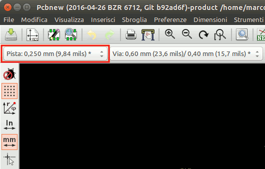
sulla barra
strumenti a destra. Clic sul pin 1 di J1 e stendere una pista fino alla
piazzola R2. Doppio-clic per impostare il punto dove finirà la pista. La
larghezza di questa pista sarà il valore predefinito di 0.250 mm. Si può
cambiare la larghezza della pista dal menu a tendina presente nella barra
strumenti in alto. Si faccia presente che per valore predefinito una sola
larghezza pista disponibile.
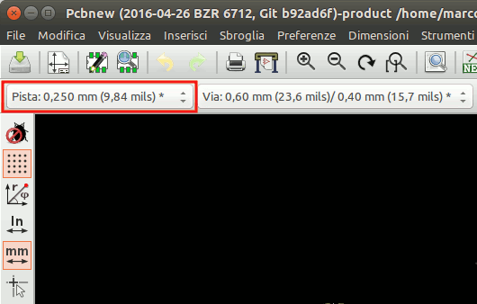 -
Se si volessero aggiungere più larghezze piste andare sulla scheda Regole di progettazione → Regole di progettazione → Regole di progettazione globali e in fondo a destra di questa finestra aggiungere ogni altra larghezza si desideri avere accessibile. Poi si può scegliere la laghezza pista dal menu a tendina durante la stesura della scheda. Vedere l’esempio sottostante (in pollici).
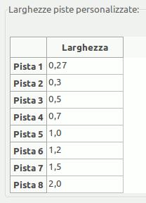 -
Alternativamente, si può aggiungere una netclass nella quale specificare un insieme di opzioni. Andare su Regole di progettazione → Regole di progettazione → Editor delle netclass e aggiungere una nuova netclass di nome power. Cambiare lo spessore pista da 8 mil (indicati come 0.0080) a 24 mil (indicati come 0.0240). Poi, aggiungere tutto quanto, esclusa la massa, alla netclass ‘power’ (selezionare default a sinistra e power a destra e usare le frecce).
-
Se si vuole cambiare la dimensione griglia, Clic destro → Selezione griglia. Assicurarsi di selezionare la dimensione griglia appropriata prima o dopo la disposizione dei componenti e la loro connessione tramite piste.
-
Ripetere questo processo fino a quando tutti i fili, eccetto pin 3 di J1, siano stati connessi. La scheda ora dovrebbe apparire come nell’esempio sottostante.

-
Ora si stenda una pista sull’altro lato rame della scheda. Selezionare B.Cu nel menu a discesa nella barra strumenti in cima. Fare clic sull’icona Aggiungi piste e via
. Disegnare una pista tra pin 3 di J1 e pin 8 di U1. Ciò non
sarebbe necessario dato che possiamo fare lo stesso con il piano di
massa. Si noti come è cambiato il colore della pista.
-
Andare da pin A a pin B cambiando strato. È possibile cambiare il piano rame mentre si sta stendendo una pista piazzando un via. Mentre si sta stendendo una pista sul lato rame superiore, clic destro e selezionare Piazza via o semplicemente premere il tasto v. Quest’operazione ci porterà sullo strato inferiore dove si potrà completare la pista.
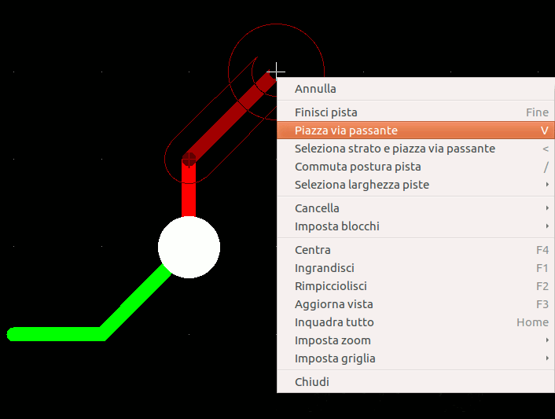 -
Quando si vuole ispezionare una connessione particolare fare clic sull’icona Evidenzia collegamento
 sulla barra strumenti a destra. Fare clic sul pin 3 di J1. La
pista e tutte le piazzole connesse dovrebbero evidenziarsi.
sulla barra strumenti a destra. Fare clic sul pin 3 di J1. La
pista e tutte le piazzole connesse dovrebbero evidenziarsi.
-
Ora verrà creato un piano di massa che sarà connesso a tutti i pin GND. Fare clic sull’icona Aggiungi zone
 sulla barra strumenti a
destra. Verrà tracciato un rettangolo attorno alla scheda, perciò fare clic
dove si vuole posizionare uno degli spigoli. Nella finestra di dialogo che
apparirà, impostare Piazzola in zona a Piazzola termica e Orientamento
bordi zone a O,V e fare clic su OK.
sulla barra strumenti a
destra. Verrà tracciato un rettangolo attorno alla scheda, perciò fare clic
dove si vuole posizionare uno degli spigoli. Nella finestra di dialogo che
apparirà, impostare Piazzola in zona a Piazzola termica e Orientamento
bordi zone a O,V e fare clic su OK.
-
Stendere il bordo attorno alla scheda facendo clic su ogni angolo in rotazione. Doppio clic per finire il rettangolo. Clic destro dentro l’area che si ha appena tracciato. Clic su Riempi o aggiorna tutte le zone. La scheda dovrebbe riempirsi di verde e assomigliare a questo:

-
Eseguire il controllo regole di progettazione facendo clic sull’icona Esegui controllo regole di progettazione
 presente sulla barra strumenti in alto.
Clic su Avvia controllo regole. Non ci dovrebbero essere errori. Clic su
Elenca disconnessi. Non ci dovrebbero piste non connesse. Clic su OK per
chiudere la finestra di dialogo.
presente sulla barra strumenti in alto.
Clic su Avvia controllo regole. Non ci dovrebbero essere errori. Clic su
Elenca disconnessi. Non ci dovrebbero piste non connesse. Clic su OK per
chiudere la finestra di dialogo.
-
Salvare il file facendo clic su File → Salva. Per ammirare la propria scheda in 3D, fare clic su Visualizza → Visualizzatore 3D.
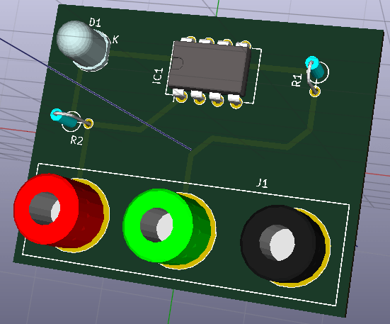 -
Trascinare il puntatore del mouse per ruotare il circuito stampato.
-
La scheda ora è completa. Per spedirla ad una ditta che produce circuiti stampatiTo sarà necessario generare una serie di file Gerber.
4.2. Generare file Gerber
Una volta che il circuito stampato è stato completato, si possono generare i file Gerber per ogni strato e spedirli al prorio fabbricante di circuiti stampati di fiducia, con i quali questo creerà lo stampato.
-
Da KiCad, aprire lo strumento Pcbnew e caricare il file della scheda facendo clic sull’icona
 .
.
-
Clic su File → Traccia. Seleziona Gerber come Formato di tracciatura e selezionare la cartella nella quale mettere tutti i file Gerber. Procedere facendo clic sul pulsante Traccia.
-
Questi sono tutti strati che bisogna selezionare per creare un tipico circuito stampato a 2 facce:
| Strato | Nome strato KiCad | Vecchio nome strato KiCad | Estensione predefinita Gerber | "Usa estensioni nomefile Protel" abilitata |
|---|---|---|---|---|
Strato rame |
B.Cu |
Copper |
.GBR |
.GBL |
Strato componenti |
F.Cu |
Component |
.GBR |
.GTL |
Strato serigrafia sopra |
F.SilkS |
SilkS_Cmp |
.GBR |
.GTO |
Solder Resist rame |
B.Mask |
Mask_Cop |
.GBR |
.GBS |
Solder Resist componenti |
F.Mask |
Mask_Cmp |
.GBR |
.GTS |
Bordi |
Edge.Cuts |
Edges_Pcb |
.GBR |
.GM1 |
4.3. Usare GerbView
-
Per visualizzare tutti i file Gerber andare al gestore progetti di KiCad e fare clic sull’icona GerbView. Sul menu a tendina selezionare Layer 1. Clic su File → Carica file Gerber o fare clic sull’icona
 . Caricare tutti i file
Gerber generati uno alla volta. Si noti come vengono visualizzati uno sopra
l’altro.
. Caricare tutti i file
Gerber generati uno alla volta. Si noti come vengono visualizzati uno sopra
l’altro.
-
Usare il menu sulla destra per selezionare/deselezionare lo strato da mostrare. Ispezionare con cura ogni strato prima di spedirlo per la produzione.
-
Per generare il file delle forature, da Pcbnew andare nuovamente al comando File → Traccia. Le impostazioni predefinite dovrebbero andare bene.
4.4. Sbroglio automatico con FreeRouter
Sbrogliare una scheda a mano è veloce e divertente, comunque, per una scheda con molti componenti si può voler usare uno sbrogliatore automatico. Solo è meglio sbrogliare le piste critiche a mano e poi impostare lo sbrogliatore per fargli fare il lavoro noioso. Esso si attiva solo per le piste non connesse. Lo sbrogliatore che useremo qui è FreeRouter da freerouting.net.
|
Nota
|
Freerouter è un’applicazione open source java, ed è necessario compilarsela da sè per usarla con KiCad. Il codice sorgente di Freerouter si può trovare su questo sito: https://github.com/nikropht/FreeRouting |
-
Da Pcbnew fare clic su File → Esporta → Specctra DSN oppure fare clic su Strumenti → FreeRoute → Esporta un file Specctra Design (*.dsn) e salvare il file localmente. Eseguire FreeRouter e fare clic sul pulsante Open Your Own Design, cercare il file con estensione dsn e caricarlo.
NotaLa finestra di dialogo Strumenti → FreeRoute possiede un bel tasto di aiuto che apre un visualizzatore di file con dentro un piccolo documento (per ora non tradotto) dal nome Freerouter Guidelines. Seguire questa guida per usare FreeRoute con efficacia. -
FreeRouter ha alcune caratteristiche che KiCad attualmente non possiede, né nello sbroglio manuale che in quello automatico. FreeRouter opera in due passi principali: primo, sbroglio della scheda e poi sua ottimizzazione. Una completa ottimizzazione può durare molto tempo, ma è possibile interromperla in ogni istante.
-
È possibile far partire lo sbroglio automatico facendo clic sul pulsante Autorouter sulla barra in cima. La barra in fondo fornisce informazioni sui processi di sbroglio in esecuzione. Se il contatore dei Pass passa il valore di 30, la scheda probabilmente non può essere sbrogliata automaticamente con questo sbrogliatore. Spargere di più i componenti o ruotarli meglio e riprovare. L’obbietivo delle rotazioni e posizionamenti dei componenti è di minimizzare il numero di incroci nella ratsnest.
-
Facendo un clic con il tasto sinistro sul mouse blocca lo sbroglio automatico e fa partire automaticamente il processo di ottimizzazione. Un ulteriore clic sinistro bloccherà il processo di ottimizzazione. A meno che non sia strettamente necessario, è meglio lasciare che FreeRouter finisca il suo lavoro.
-
Fare clic sul menu File → Export Specctra Session File e salvare il file della scheda con estensione .ses. Probabilmente non servirà salvare il file delle regole di FreeRouter.
-
Tornare a Pcbnew. Ora è possibile importare la scheda sbrogliata facendo clic sull’icona Strumenti → FreeRoute e poi sull’icona Reimporta il file Spectra Session (.ses) e selezionando il nostro file .ses.
Se c'è qualche pista sbrogliata che non ci convince, si può cancellarla e
ri-sbrogliarla nuovamente, usando il tasto canc e lo strumento di sbroglio,
che corrisponde all’icona Aggiungi pista
 sulla barra comandi di
destra.
sulla barra comandi di
destra.
5. Forward annotation in KiCad
Una volta completato il nostro schema elettrico, l’assegnazione delle impronte, la disposizione della scheda e generati i file Gerber, siamo pronti a spedire il tutto ad un produttore di circuiti stampati in modo che la nostra scheda possa diventare realtà.
Spesso, questo flusso di lavoro lineare, risulta essere non proprio così unidirezionale. Per esempio, quando si deve modificare/estendere una scheda per la quale si è, o altri hanno già, completato questo work-flow, è possibile che si renda necessario spostare componenti, rimpiazzarli con altri, cambiare impronte e altro ancora. Durante questo processo di modifica, ciò che in genere non si vuole fare è ri-sbrogliare da capo tutta la scheda. Ecco invece come si può procedere:
-
Supponiamo che si voglia rimpiazzare un ipotetico connettore CON1 con CON2.
-
Si è già completato lo schema elettrico e sbrogliato tutto il circuito stampato.
-
Da KiCad, avviare Eeschema, fare le modifiche cancellando CON1 e aggiungendo CON2. Salvare lo schema tramite l’icona
e fare clic sull’icona della
Generazione netlist
sulla
barra degli strumenti in cima.
-
Fare clic su Netlist e poi su salva. Salvare con il nome file predefinito dato che bisogna riscrivere il vecchio.
-
Ora assegnare un’impronta a CON2. Fare clic sull’icona Esegui Cvpcb
sulla barra strumenti in
cima. Assegnare l’impronta al nuovo dispositivo CON2. Il resto dei
componenti ha ancora le impronte precedenti assegnate. Chiudere Cvpcb.
-
Tornando nell’editor degli schemi elettrici, salvare il progetto facendo clic su File → Salva progetto schema. Chiudere l’editor.
-
Dal gestore dei progetti KiCad, fare clic sull’icona Pcbnew. Si aprirà la finestra di Pcbnew.
-
La vecchia scheda, già sbrogliata, dovrebbe aprirsi automaticamente. Importiamo in nuovo file netlist. Fare clic sull’icona Leggi netlist
sulla barra
strumenti in cima.
-
Fare click sul pulsante Esplora file netlist, seleziona il file netlist nella finestra di dialogo di selezione file, e fare clic su Leggi netlist corrente. Poi fare clic sul pulsante Chiudi.
-
A questo punto si dovrebbe essere in grado di vedere una disposizione con tutti i componenti precedenti già sbrogliati. Sull’angolo in alto a sinistra si dovrebbe osservare tutti i componenti non sbrogliati, nel nostro caso solo CON2. Selezionare CON2 con il mouse. Spostare il componente nel mezzo della scheda.
-
Piazzare CON2 e sbrogliarlo. Una volta fatto, salvare e procedere con la generazione dei file Gerber come di consueto.
Il processo qui descritto può essere facilmente ripetuto quante volte si vuole. Oltre al metodo di Forward Annotation descritto poc’anzi, c'è un’altro metodo conosciuto come Backward Annotation. Questo metodo permette di fare le modifiche al circuito stampato già sbrogliato con Pcbnew e successivamente aggiornare tali modifiche nello schema elettrico e nel file di netlist. Il metodo di Backward Annotation, comunque, non viene considerato molto utile e perciò non lo si è descritto in questa sede.
6. Creare simboli elettrici in KiCad
Alle volte un componente che si vuole piazzare sul proprio schema elettrico non è presente nelle librerie di KiCad. Ciò succede spesso e non c'è bisogno di preoccuparsi. In questa sezione vedremo come si può creare velocemente un nuovo componente dello schema con KiCad. In ogni caso, si ricordi che si possono sempre trovare componenti KiCad su Internet. Per esempio partendo da qui:
In KiCad, un componente è un testo che comincia con DEF e finisce con ENDDEF. Uno o più componenti vengono solitamente inseriti in un file di libreria con estensione .lib. Se si vuole aggiungere componenti ad un file libreria si può sempre usare i comandi di copia e incolla.
6.1. Usare l’editor dei componenti di libreria
-
Per creare nuovi componenti si può usare l'editor delle librerie di componenti (parte di Eeschema). Nella cartella del nostro progetto tutorial1 creare una cartella di nome library. Dentro metteremo i nuovi file di libreria myLib.lib appena avremo creato il nostro nuovo componente.
-
Ora possiamo cominciare a creare il nostro nuovo componente. Da KiCad, eseguire Eeschema, clic sull’icona Editor librerie e poi clic sull’icona Nuovo componente
 . Apparirà la
finestra delle proprietà del componente. Dare come nome al nuovo componente
MYCONN3, impostare il Designatore di riferimento predefinito a J, e il
Numero di parti per contenitore a 1. Clic su OK. Se appare un
avvertimento fare clic su Si. A questo punto il componente è composto solo
dalle sue etichette. Aggiungiamo alcuni pin. Clic sull’icona Aggiungi pin
. Apparirà la
finestra delle proprietà del componente. Dare come nome al nuovo componente
MYCONN3, impostare il Designatore di riferimento predefinito a J, e il
Numero di parti per contenitore a 1. Clic su OK. Se appare un
avvertimento fare clic su Si. A questo punto il componente è composto solo
dalle sue etichette. Aggiungiamo alcuni pin. Clic sull’icona Aggiungi pin
 sulla barra strumenti a destra. Per
piazzare il pin, clic sinistro nel centro del foglio dell’editor delle parti
appena sotto l’etichetta MYCONN3.
sulla barra strumenti a destra. Per
piazzare il pin, clic sinistro nel centro del foglio dell’editor delle parti
appena sotto l’etichetta MYCONN3.
-
Nella finestra delle proprietà del pin che appare, impostare il nome del pin a VCC, impostare il numero del pin a 1, e il Funzionalità elettrica a Uscita alimentazione poi fare clic su OK.
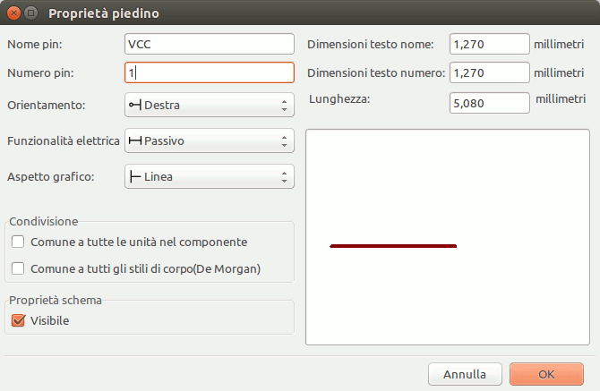 -
Piazzare il pin facendo clic sulla posizione dove lo si desidera collocare, appena sotto l’etichetta MYCONN3.
-
Ripetere i passi di piazzamento di pin, questa volta impostando il Nome pin a Ingresso, Numero pin a 2, e Funzionalità elettrica a Ingresso alimentazione.
-
Ripetere ancora i passi di piazzamento di pin, questa volta impostando il Nome pin a GND, Numero pin a 3, e Funzionalità elettrica a Uscita alimentazione. Sistemare i pin uno sopra l’altro. L’etichetta componente MYCONN3 dovrebbe risultare al centro della pagina (dove le linee blu si incrociano).
-
Poi, disegnare il contorno del componente. Clic sull’icona Aggiungi rettangolo
 . Vogliamo disegnare
un rettangolo vicino ai pin, come mostrato sotto. Per far ciò, fare clic
dove si desidera posizionare l’angolo alto a sinistra del rettangolo (non
mantenere premuto il pulsante del mouse). Clic nuovamente dove si vuole
posizionare l’angolo basso a destra del rettangolo.
. Vogliamo disegnare
un rettangolo vicino ai pin, come mostrato sotto. Per far ciò, fare clic
dove si desidera posizionare l’angolo alto a sinistra del rettangolo (non
mantenere premuto il pulsante del mouse). Clic nuovamente dove si vuole
posizionare l’angolo basso a destra del rettangolo.

-
Se si desidera riempire il rettangolo di giallo, impostare il colore di riempimento a yellow 4 nelle Preferenze → Imposta schema colori, poi selezionare il rettangolo nello schermo di modifica e modificare (E), selezionando Riempimento sfondo.
-
Salvare il componente nella libreria myLib.lib. Clic sull’icona Nuova libreria
 , entrare nella
cartella tutorial1/library/ e salvare il nuovo file di libreria con nome
myLib.lib.
, entrare nella
cartella tutorial1/library/ e salvare il nuovo file di libreria con nome
myLib.lib.
-
Andare su Preferenze → Librerie componenti e aggiungere sia tutorial1/library/ in Percorsi di ricerca definiti dall’utente che myLib.lib in File librerie componenti.
-
Fare clic sull’icona Seleziona libreria corrente
 . Nella finestra di selezione
libreria fare clic su myLib e poi su OK. Si noti come l’intestazione della
finestra indica la libreria attualmente in uso, che ora dovrebbe essere
myLib.
. Nella finestra di selezione
libreria fare clic su myLib e poi su OK. Si noti come l’intestazione della
finestra indica la libreria attualmente in uso, che ora dovrebbe essere
myLib.
-
Clic sull’icona Aggiorna componente corrente nella libreria corrente
 nella barra in
cima. Salvare tutti i cambiamenti facendo clic sull’icona Salva la libreria
attualmente caricata su disco
nella barra in
cima. Salvare tutti i cambiamenti facendo clic sull’icona Salva la libreria
attualmente caricata su disco
 nella barra strumenti
in cima. Clic su Si in ogni messaggio di conferma che appare. Il nuovo
componente dello schema elettrico è ora finito e disponibile nella libreria
indicata nella barra del titolo della finestra.
nella barra strumenti
in cima. Clic su Si in ogni messaggio di conferma che appare. Il nuovo
componente dello schema elettrico è ora finito e disponibile nella libreria
indicata nella barra del titolo della finestra.
-
Ora si può chiudere la finestra dell’editor dei componenti di libreria. Si tornerà alla finestra dell’editor degli schemi elettrici. Il nostro nuovo componente ora sarà disponibile nella libreria myLib.
-
Si può rendere qualsiasi file di libreria file.lib disponibile aggiungendolo al percorso delle librerie. Da EESchema, andare sulle Preferenze → Libreria e aggiungere entrambi i percorsi ad essa in Percorsi di ricerca definiti dall’utente e file.lib in File librerie componenti.
6.2. Esportazione, importazione e modifica dei componenti di libreria
Invece che creare un componente di libreria da zero è spesso più facile partire da uno già fatto e modificarlo. In questa sezione vedremo come esportare un componente dalla libreria standard di KiCad device nella nostra libreria myOwnLib.lib e come modificarlo.
-
Da KiCad, eseguire Eeschema, fare clic sull’icona Editor delle librerie , fare clic sull’icona Seleziona libreria corrente
e
scegliere la libreria device. Clic sull’icona Carica componente dalla
liberia corrente
 e
importare RELAY_2RT.
e
importare RELAY_2RT.
-
Clic sull’icona Esporta componente
 , entrare nella cartella library/
e salvare il nuovo file di libreria con nome myOwnLib.lib.
, entrare nella cartella library/
e salvare il nuovo file di libreria con nome myOwnLib.lib.
-
È possibile rendere questo componente e l’intera libreria myOwnLib.lib disponibili aggiungendole al percorso di libreria. Da EESchema, andare su Preferenze → Librerie componenti e aggiungere sia library/ in Percorsi di ricerca definiti dall’utente che myOwnLib.lib nel File librerie componenti. Chiudere la finestra.
-
Clic sull’icona Seleziona libreria corrente
. Nella finestra di selezione
libreria clic su myOwnLib e poi su OK. Si noti come l’intestazione della
finestra che indica la libreria attualmente in uso, ora dovrebbe mostrare
myOwnLib.
-
Clic sull’icona Carica componente da modificare dalla libreria corrente
e
importa RELAY_2RT.
-
Ora si può modificare il componente a piacimento. Passare con il puntatore del mouse sopra l’etichetta RELAY_2RT, premere il tasto e e rinominarlo in MY_RELAY_2RT.
-
Fare clic sull’icona Aggiorna componente corrente nella libreria corrente
nella barra
strumenti in alto. Salvare tutti i cambiamenti facendo clic sull’icona
Salva la libreria corrente su disco
nella barra strumenti
in alto.
6.3. Creare componenti dello schema con quicklib
Questa sezione presenta un modo alternativo per creare componenti dello schema elettrico per MYCONN3 (vedere MYCONN3 sopra) usando lo strumento Internet quicklib.
-
Andare alla pagina web del progetto quicklib: http://kicad.rohrbacher.net/quicklib.php
-
Compilare la pagina con le seguenti informazioni: Component name: MYCONN3 Reference Prefix: J Pin Layout Style: SIL Pin Count, N: 3
-
Fare click sull’icona Assign Pins. Compilare la pagina con le seguenti informazioni: Pin 1: VCC Pin 2: input Pin 3: GND
-
Fare clic sull’icona Preview it (N.d.T: anteprima) e, se siete soddisfatti, clic su Build Library Component (N.d.T: crea componente libreria). Scaricare il file e rinominarlo demo1/library/myLib.lib.. Ecco fatto!
-
Osservatelo usando KiCad. Dal gestore di progetti KiCad, eseguire EESchema, fare clic sull’icona “Editor librerie” , clic sull’icona “Importa componente”
 , scorrere su
tutorial1/library/ e selezionare myQuickLib.lib.
, scorrere su
tutorial1/library/ e selezionare myQuickLib.lib.

-
È possibile rendere questo componente e l’intera libreria myOwnLib.lib disponibili aggiungendole al percorso di libreria. Da EESchema, andare su Preferenze → Librerie componenti e aggiungere sia library/ in Percorsi di ricerca definiti dall’utente che myOwnLib.lib nel File librerie componenti.
Come si può immaginare, questo metodo per la creazione di componenti di libreria può essere molto efficace quando si vogliono creare componenti con elevato numero di piedini.
6.4. Fare un componente con un grande numero di pin
Nella sezione intitolata Crea componenti dello schema con quicklib abbiamo visto come creare un componente dello schema elettrico usando lo strumento web quicklib. È probabile che ci si troverà comunque nella necessità di creare un componente dello schema elettrico con un grande numero di piedini (alcune centinaia). In KiCad per fortuna, ciò non è un grosso problema.
-
Supponiamo si voglia creare un componente dello schema elettrico per un dispositivo con 50 pin. È pratica comune disegnarlo usando più simboli con meno piedini, per esempo due disegni di 25 pin ognuno. Questa rappresentazione del componente semplifica la connessione ai piedini.
-
Il modo migliore per creare il nostro componente è di usare quicklib per generare due componenti di 25 pin ciascuno separatamente, ri-numerare i pin usando uno script Python ed infine fondere i due usando una semplice procedura di copia / incolla per unirli in un singolo componente tra un DEF e un ENDDEF.
-
Troviamo sotto un esempio di semplice script Python che può essere usato assieme con i file in.txt e out.txt per ri-numerare la riga: X PIN1 1 -750 600 300 R 50 50 1 1 I in X PIN26 26 -750 600 300 R 50 50 1 1 I; ciò viene effettuato per tutte le righe del file in.txt.
#!/usr/bin/env python ''' semplice script per elaborare la numerazione dei pin di componenti KiCad''' import sys, re try: fin=open(sys.argv[1],'r') fout=open(sys.argv[2],'w') except: print "Uso errato di questo script, provare:", sys.argv[0], "in.txt out.txt" sys.exit() for ln in fin.readlines(): obj=re.search("(X PIN)(\d*)(\s)(\d*)(\s.*)",ln) if obj: num = int(obj.group(2))+25 ln=obj.group(1) + str(num) + obj.group(3) + str(num) + obj.group(5) +'\n' fout.write(ln) fin.close(); fout.close() # # per ulteriori informazioni sulla sintassi delle espressioni regolari e della generazione di componenti KiCad: # http://gskinner.com/RegExr/ # http://kicad.rohrbacher.net/quicklib.php
-
Durante la fusione dei due componenti in uno, è necessario usare l’Editor Libreria da Eeschema per spostare il primo componente in modo che il secondo non finisca sopra di esso. Di seguito il file .lib finale e la sua rappresentazione in Eeschema.
EESchema-LIBRARY Version 2.3 #encoding utf-8 # COMP DEF COMP U 0 40 Y Y 1 F N F0 "U" -1800 -100 50 H V C CNN F1 "COMP" -1800 100 50 H V C CNN DRAW S -2250 -800 -1350 800 0 0 0 N S -450 -800 450 800 0 0 0 N X PIN1 1 -2550 600 300 R 50 50 1 1 I ... X PIN49 49 750 -500 300 L 50 50 1 1 I ENDDRAW ENDDEF #End Library

-
Lo script Python qui presentato è uno strumento molto potente per la gestione sia dei numeri che delle etichette di pin. Si faccia comunque presente che tutta la sua potenza deriva dalla sintassi arcana quanto incredibilmete utile delle espressioni regolari: http://gskinner.com/RegExr/.
7. Creare impronte di componenti
Differentemente da altri strumenti software EDA, che possiedono un tipo di libreria che contiene sia i simboli delo schema elettrico che le varie corrispondenti impronte compatibili, i file KiCad .lib contengono i simboli dello schema elettrico e i file .mod contengono le impronte, o moduli. Cvpcb serve quindi a mappare le impronte ai simboli.
Come per i file .lib files, i file di libreria .kicad_mod sono file di testo che possono contenere da una a qualsiasi numero di parti.
KiCad comprende una vasta libreria di impronte, ma a volte potreste scoprire che proprio l’impronta di cui avete bisogno non è presente nelle librerie di KiCad. Ecco i passaggi per la creazione di una nuova impronta di circuito stampato KiCad:
7.1. Usare l’editor delle impronte
-
Dal gestore di progetti KiCad lanciare l’esecuzione dello strumento Pcb new. Fare clic sull’icona Apri editor impronte sulla barra strumenti in cima. Si aprirà L’editor delle impronte.
-
Stiamo per salvare la nuova impronta MYCONN3 nella nuova libreria impronte myfootprint. Creare una nuova cartella myfootprint.pretty nella cartella progetto tutorial1/. Fare clic su Preferenze → Manager librerie di impronte e premere il pulsante Accoda libreria. Nella tabella, inserire "myfootprint" come denominazione, inserire "${KIPRJMOD}/myfootprint.pretty" come percorso libreria e inserire "KiCad" come tipo plugin. Premere OK per chiudere la finestra delle tabelle librerie PCB. Fare clic sull’icona Seleziona libreria attiva
sulla barra degli strumenti in
cima. Selezionare la libreria myfootprint.
-
Fare clic sull’icona Nuova impronta
 sulla barra
strumenti in cima. Battere MYCONN3 come nome impronta. Nel mezzo dello
schermo apparirà l’etichetta MYCONN3. Sotto l’etichetta si può osservare
l’etichetta REF*. Clic destro su MYCONN3 e spostarlo sopra
REF*. Clic destro su REF*__, selezionare Modifica testo e
rinominarlo a SMD. Impostare il valore Mostra a Invisibile.
sulla barra
strumenti in cima. Battere MYCONN3 come nome impronta. Nel mezzo dello
schermo apparirà l’etichetta MYCONN3. Sotto l’etichetta si può osservare
l’etichetta REF*. Clic destro su MYCONN3 e spostarlo sopra
REF*. Clic destro su REF*__, selezionare Modifica testo e
rinominarlo a SMD. Impostare il valore Mostra a Invisibile.
-
Selezionare l’icona Aggiungi piazzola
 sulla barra strumenti a destra. Fare clic sullo spazio di lavoro per
posizionare la piazzola. Clic destro sulla nuova piazzola e clic su
Modifica piazzola. Altrimenti si può usare il tasto scorciatoia «e».
sulla barra strumenti a destra. Fare clic sullo spazio di lavoro per
posizionare la piazzola. Clic destro sulla nuova piazzola e clic su
Modifica piazzola. Altrimenti si può usare il tasto scorciatoia «e».

-
Impostare il numero piazzola a 1, Forma piazzola a Rettangolo, Tipo piazzola a SMD, Dimensione X forma a 0.4, e Dimensione Y forma a 0.8. Clic su OK. Clic nuovamente su Aggiungi piazzole per aggiungere ancora due piazzole.
-
Se si vuole cambiare la dimensione griglia, Clic destro → Seleziona griglia. Assicurarsi di selezionare la dimensione griglia appropriata prima di aggiungere i componenti.
-
Spostare l’etichetta MYCONN3 e l’etichetta SMD di lato in modo che il risultato somigli all’immagine mostrata sopra.
-
Quando si inseriscono piazzole è spesso necessario misurare le distanze relative. Posizionare il puntatore dove si desidera impostare il punto di coordinate relative (0,0) e premere la barra spazio. Muovendo attorno il puntatore, si osserverà l’indicazione della posizione relativa del puntatore in basso nella finestra. Premendo ancora la barra spazio si imposterà una nuova origine per le coordinate.
-
Ora aggiungiamo un contorno impronta. Fare clic sul pulsante Aggiungi linea o poligono grafici
 presente nella barra comandi a destra. Disegnare un contorno del connettore
attorno al componente.
presente nella barra comandi a destra. Disegnare un contorno del connettore
attorno al componente.
-
Clic sull’icona Salva impronta nella libreria attiva
nella barra strumenti
in cima, usando il nome predefinito MYCONN3.
8. Note sulla portabilità dei file di progetto di KiCad
Che file sono necessari se si vuole spedire a qualcuno l’intero progetto KiCad in modo che lo possa usare?
Quando si condivide un progetto KiCad con qualcuno, è importante che il file dello schema elettrico .sch, lo schema del circuito stampato .kicad_pcb, il file del progetto .pro e il file della netlist .net, siano spediti assieme al file dei simboli elettrici .lib e a quello delle impronte di circuito stampato .mod. Solo così c'è la totale libertà di modifica dello schema e della scheda.
Con gli schemi elettrici di KiCad, servono i file .lib che contengono i simboli elettrici. Tali file di libreria devono essere caricati nelle preferenze di Eeschema. Invece con le schede (i file .kicad_pcb), le impronte possono essere memorizzate dentro il file .kicad_pcb. Si può spedire a qualcuno un file .kicad_pcb e nient’altro, e saranno comunque in grado di visualizzarlo e di modificarne la disposizione. Comunque, quando vorranno caricare componenti da una netlist, servirà la presenza delle librerie di moduli (i file .kicad_mod) che andranno caricate nelle preferenze di Pcbnew come per gli schemi elettrici. Inoltre, è necessario caricare i file .kicad_mod nelle preferenze di Pcbnew per fare in modo che tali impronte vengano mostrate in Cvpcb.
Se qualcuno vi spedisce un file .kicad_pcb con impronte che si vorrebbe usare in un’altra scheda, si può aprire l’editor delle impronte, caricare un’impronta dalla scheda corrente, e salvarla o esportarla in un’altra libreria di impronte. Si possono anche esportare tutte le impronte da un file .kicad_pcb in una volta tramite il comando Pcbnew → File → Archivia → Impronte → Crea archivio impronte, che creerà un nuovo file .kicad_mod con tutte le impronte della scheda.
Conclusione, se il circuito stampato è l’unica cosa che si vuole distribuire, allora il file della scheda .kicad_pcb è sufficiente. Invece, se si desidera consentire la piena possibilità di usare e modificare lo schema, i suoi componenti e il circuito stampato, è fortemente raccomandato di creare un archivio zip e spedire la seguente cartella di progetto:
tutorial1/
|-- tutorial1.pro
|-- tutorial1.sch
|-- tutorial1.kicad_pcb
|-- tutorial1.net
|-- library/
| |-- myLib.lib
| |-- myOwnLib.lib
| \-- myQuickLib.lib
|
|-- myfootprint.pretty/
| \-- MYCONN3.kicad_mod
|
\-- gerber/
|-- ...
\-- ...
9. Uno sguardo sulla documentazione di KiCad
Questa che state leggendo, è stata pensata come una guida veloce sulle parti più importanti di KiCad. Per avere istruzioni più dettagliate, consultare i file dei manuali accessibili dall’interno di ogni modulo di KiCad, facendo clic su Aiuto → Manuale.
KiCad si presenta con un discreto numero di manuali multilingua per tutte le sue componenti software.
La versione inglese di tutti i manuali di KiCad viene distribuita con KiCad.
Oltre ai suoi manuali, KiCad viene distribuito con questa guida, che è stata tradotta in molte lingue (N.d.T: in italiano per esempio :-). I vari formati di questa guida sono distribuiti gratuitamente con tutte le versioni recenti di KiCad. Questa guida assieme, agli altri manuali, dovrebbe essere disponibile già pacchettizzata assieme a KiCad per la propria piattaforma.
Per esempio, su Linux le posizioni tipiche sono nelle seguenti directory, a seconda della propria distribuzione:
/usr/share/doc/kicad/help/it/ /usr/local/share/doc/kicad/help/it
Su Windows è in:
<directory di installazione>/share/doc/kicad/help/it
Su OS X:
/Library/Application Support/kicad/help/it
9.1. La documentazione di KiCad sul Web
L’ultima documentazione di KiCad è disponibile in più lingue sul Web.